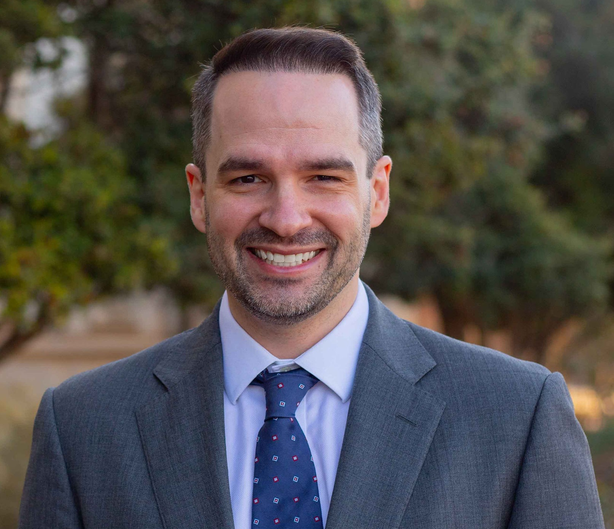
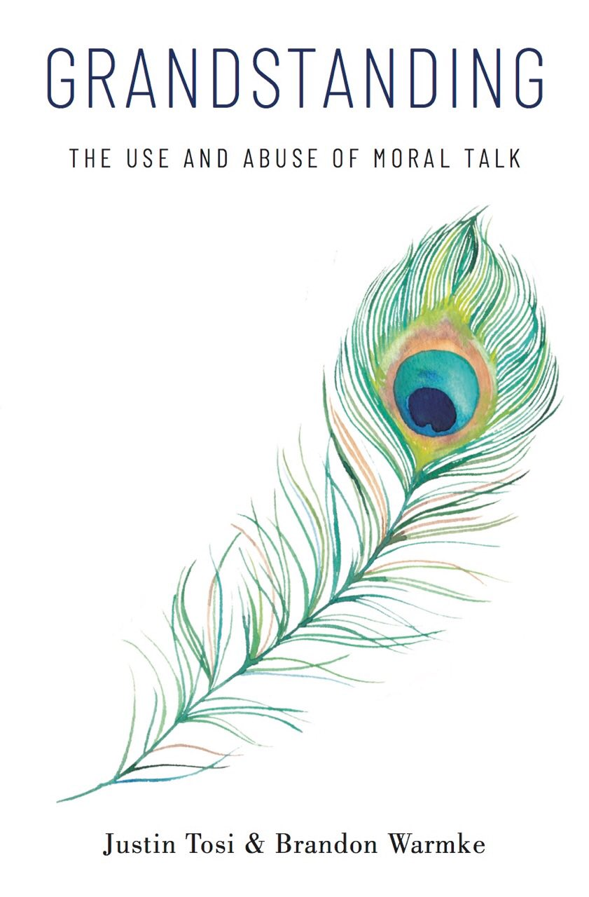

I’m a philosopher teaching ethics at the McDonough School of Business at Georgetown University. I write about social, political, legal, and moral philosophy, and especially the ethics of public discourse, social morality, and special obligations.
My work has been published in Philosophy & Public Affairs, Oxford Studies in Political Philosophy, Legal Theory, Pacific Philosophical Quarterly, and other venues.
I’m currently working on papers on censorship, civil discourse, and business ethics.

Routledge, 2023. With Brandon Warmke.

Oxford University Press, 2020. With Brandon Warmke.
Winner, Exceptional Scholarship Award, Heterodox Academy, 2020.
Translated into Portuguese, Korean, Arabic, Chinese, and Persian.
Defenders of censorship sometimes claim that it is justified as a means of protecting audiences from the influence of bad ideas. This essay argues that censorship is likely to frustrate this aim, even under favorable conditions. The central problem arises from what I call the Endorsement Effect: when a censoring authority permits an idea to be expressed, its inaction functions as an implicit signal that the idea is credible. Where trust in the censor is warranted, this is a rational inference rather than a mere behavioral tendency: the censor screens for bad content, so what it permits is more likely to be good. The trouble is that bad ideas that escape censorship will receive a credibility boost in the eyes of those who trust the censor. Moreover, the more effective the censor is at filtering out genuinely bad content, the stronger this unintended credibility boost becomes. If the aim of censorship is to halt the spread of bad ideas, then this mechanism threatens to undermine that aim. I consider the implications of this challenge for two types of censors. Purist censors seek to avoid any role in promoting bad ideas, but the Endorsement Effect renders this goal impossible in practice. Pragmatist censors aim simply to reduce the overall promotion of bad ideas, but must nevertheless show that censorship is beneficial on net once we consider its unintended consequences. I argue that both types of censor face serious difficulties, and that the Endorsement Effect represents an unnoticed cost that defenders of censorship must address.
Universities that practice censorship might offer various justifications for doing so. This essay considers three possible justifications and argues that each is undermined by what I call the Endorsement Effect. First, universities might argue that censorship is justified because it protects their community from bad ideas. Second, they might claim that censoring certain expressions is justified because doing so expresses the university community’s commitment to its values. Finally, they might argue that censorship is justified as a way of expanding the university’s authority over the marketplace of ideas. The Endorsement Effect causes problems for each of these justifications. The idea is that censorship operates as a filtering process: when universities censor some ideas while permitting others, they implicitly signal approval of what is allowed to appear. Those who trust the university’s judgment will therefore regard permitted ideas as better in terms of the properties filtered for. Since no censorship regime will catch every objectionable idea, some bad ideas will inevitably escape the filter and receive this boost. All three justifications fail because of what the act of censoring in some cases reveals about the censors’ judgment in other cases.
Some people defend cancel culture by arguing that the motives behind cancellation don’t matter. If we award people social status for calling out wrongdoing, more wrongdoing will be called out, and we all benefit. We argue that although it is sometimes justified that people suffer social consequences for bad behavior, rewarding cancellation campaigns is a bad idea. People who cancel others to look good will go after easy targets rather than deserving ones, and a culture that hands out praise for showy moral enforcement will not deliver the moral progress its defenders promise. In other words: there is nothing inherently wrong with canceling, but cancel culture is a mistake.
Traditional case studies in business ethics ask students to evaluate others’ decisions with hindsight and moral distance. The Business Project reverses this dynamic by requiring students to build companies they genuinely care about, make public commitments they must defend, and navigate ethical dilemmas emerging from their own choices. Over a semester, student teams pitch businesses grounded in ethical values, critique competitors’ moral failures, and respond to custom dilemmas that force difficult trade-offs between principles and viability. The assignment integrates entrepreneurial action with ethical reflection, making moral reasoning routine rather than exceptional. By eliminating the comfortable distance of hypothetical scenarios, the project creates learning conditions closer to actual ethical decision-making: competing pressures, personal investment, and skeptical audiences demanding justification. This experiential approach trains students to identify moral problems before they become crises and to integrate ethical principles into strategic planning.
In contemporary political discussions, it is depressingly common to see people criticized for expressing impure beliefs. Moreover, those who sometimes defect from their tribe are criticized for failing to be firmly enough on the side of the angels. We consider explanations for this behavior, including its relationship to moral grandstanding. We will also argue, on both moral and epistemic grounds, in favor of a norm against “blocking the exits.” We should not use social pressure to discourage people from publicly changing their minds.
American sociologist Robert Nisbet once described conservatives and libertarians as “uneasy cousins.” The description is apt. While sharing a family resemblance and many of the same political rivals, conservatism and libertarianism are fundamentally at odds. This paper explains why this is so from the conservative perspective. It surveys the starting points and major themes of conservatism and libertarianism. It identifies what conservatives and libertarians agree about. It concludes by showing what conservatives have against libertarianism.
The present study aimed to understand how status-oriented individual differences such as narcissistic antagonism, narcissistic extraversion, and moral grandstanding motivations may have longitudinally predicted both behavioral and social media responses during the early stages of the COVID-19 pandemic. Via YouGov, a nationally representative sample of U.S. adults was recruited in August of 2019 (N = 2,519; Mage = 47.5, SD = 17.8; 51.4% women) and resampled in May of 2020, (N = 1,533). Results indicated that baseline levels of narcissistic antagonism were associated with lower levels of social distancing and lower compliance with public health recommended behaviors. Similarly, dominance oriented moral grandstanding motivations predicted greater conflict with others over COVID-19, greater engagement in status-oriented social media behaviors about COVID-19, and lower levels of social distancing.
The present work posits that social motives, particularly status seeking in the form of moral grandstanding, are likely at least partially to blame for elevated levels of affective polarization and ideological extremism in the U.S. In Study 1, results from both undergraduates (N = 981; Mean age = 19.4; SD = 2.1; 69.7% women) and a cross-section of U.S. adults matched to 2010 census norms (N = 1,063; Mean age = 48.20, SD = 16.38; 49.8% women) indicated that prestige-motived grandstanding was consistently and robustly related to more extreme ideological views on a variety of issues. In Study 2, results from a weighted, nationally-representative cross-section of U.S. adults (N = 2,519; Mean age = 47.5, SD = 17.8; 51.4% women) found that prestige motivated grandstanding was reliably related to both ideological extremism and affective polarization.
Moral grandstanding, or the use of moral talk for self-promotion, is a threat to free expression. When grandstanding is introduced in a public forum, several ideals of free expression are less likely to be realized. Popular views are less likely to be challenged, people are less free to entertain heterodox ideas, and the cost of changing one’s mind goes up.
Public discourse is often caustic and conflict-filled. This trend seems to be particularly evident when the content of such discourse is around moral issues (broadly defined) and when the discourse occurs on social media. Several explanatory mechanisms for such conflict have been explored in recent psychological and social-science literatures. The present work sought to examine a potentially novel explanatory mechanism defined in philosophical literature: Moral Grandstanding. According to philosophical accounts, Moral Grandstanding is the use of moral talk to seek social status. For the present work, we conducted six studies, using two undergraduate samples (Study 1, N = 361; Study 2, N = 356); a sample matched to U.S. norms for age, gender, race, income, Census region (Study 3, N = 1,063); a YouGov sample matched to U.S. demographic norms (Study 4, N = 2,000); and a brief, one-month longitudinal study of Mechanical Turk workers in the U.S. (Study 5, Baseline N = 499, follow-up n = 296), and a large, one-week YouGov sample matched to U.S. demographic norms (Baseline N = 2,519, follow-up n = 1,776). Across studies, we found initial support for the validity of Moral Grandstanding as a construct. Specifically, moral grandstanding motivation was associated with status-seeking personality traits, as well as greater political and moral conflict in daily life.
Basic income policies have recently enjoyed a great deal of discussion, but they are not a natural fit with views of distributive or social justice endorsed by many moral and political philosophers. This essay develops and defends a new view of social justice, called relational sufficientarianism, which is more compatible with a universal basic income. Relational sufficientarianism holds that persons in a just society must have sufficient social status, but not necessarily equal social status. It argues that this view offers a more plausible account of just social relations than relational egalitarianism, a better account of the threshold for sufficiency than distributive sufficientarianism, and can serve as a more suitable theoretical backing for a universal basic income than either of these other views, or distributive egalitarianism.
The principle of fair play is widely thought to require simply that costs and benefits be distributed fairly. This gloss on the principle, while not entirely inaccurate, has invited a host of popular objections based on misunderstandings about fair play. Central to many of these objections is a failure to treat the principle of fair play as a transactional principle—one that allocates special obligations and rights among persons as a result of their interactions. I offer an interpretation of the principle of fair play that emphasizes its similarities to another transactional principle: consent. This interpretation reveals that playing fair requires one to reciprocate specifically by following the rules of the cooperative scheme from which one benefits, just as consent requires one to act according to the terms of an agreement. I then draw on the comparison with consent to reply to some popular and persistent objections to the principle.
There is an emerging consensus among political philosophers that state legitimacy involves something more than—or perhaps other than—political obligation. Yet the principle of fair play, which many take to be a promising basis for political obligation, has been largely absent from discussions of the revised conception of legitimacy. This paper shows how the principle of fair play can generate legitimate political authority by drawing on a neglected feature of the principle—its stipulation that members of a cooperative scheme must reciprocate specifically by submitting to the scheme’s rules.
In his paper “Fairness, Political Obligation, and the Justificatory Gap” (published in the Journal of Moral Philosophy), Jiafeng Zhu argues that the principle of fair play cannot require submission to the rules of a cooperative scheme, and that when such submission is required, the requirement is grounded in consent. I propose a better argument for the claim that fair play requires submission to the rules than the one Zhu considers. I also argue that Zhu’s attribution of consent to people commonly thought to be bound to follow the rules by a duty of fair play is implausible.
The philosophical literature on state legitimacy has recently seen a significant conceptual revision. Several philosophers have argued that the state’s right to rule is better characterized not as a claim right to obedience, but as a power right. There have been few attempts to show that traditional justifications for the claim right might also be used to justify a power right, and there have been no such attempts involving the principle of fair play, which is widely regarded as the most promising basis for a claim right to obedience. William Edmundson argues that the principle of fair play cannot generate power rights, and so any attempt at a fair play account of legitimacy must fail. I explain how fair play could generate a power right, owing to its stipulation that the rules of a cooperative scheme specify the form of participants’ repayment.
Moral grandstanding is a pervasive feature of public discourse. Many of us can likely recognize that we have engaged in grandstanding at one time or another. While there is nothing new about the phenomenon of grandstanding, we think that it has not received the philosophical attention it deserves. In this essay, we provide an account of moral grandstanding as the use of public discourse for moral self-promotion. We then show that our account, with support from some standard theses of social psychology, explains the characteristic ways that grandstanding is manifested in public moral discourse. We conclude by arguing that there are good reasons to think that moral grandstanding is typically morally bad and should be avoided.
In this paper we explore the relationship between forgiving and punishment. We set out a number of arguments for the claim that if one forgives a wrongdoer, one should not punish her. We then argue that none of these arguments is persuasive. We conclude by reflecting on the possibility of institutional forgiveness in the criminal justice setting and on the differences between forgiveness and acts of mercy.
This chapter presents David Foster Wallace’s views about three positions regarding the good life—ironism, hedonism, and narrative theories. Ironism involves distancing oneself from everything one says or does, and putting on Wallace’s so-called “mask of ennui.” Wallace said that the notion appeals to ironists because it insulates them from criticism. However, he reiterated that ironists can be criticized for failing to value anything. Hedonism states that a good life consists in pleasure. Wallace rejected such a notion, doubting that pleasure could play a fundamental role in the good life. Lastly, narrative theories characterize the good life by fidelity to a unified narrative—a systematic story about one’s life, composed of a set of ends or principles according to which one lives. Wallace believed that these theories turn people into spectators, rather than the participants in their own lives.